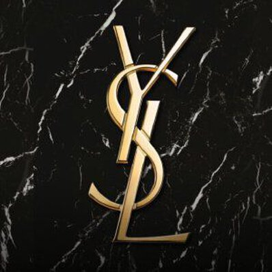

YSL Beauty & Fashion is a globally recognized luxury brand that combines innovation, elegance, and creativity. Our collections are carefully designed to inspire confidence and celebrate individuality through premium beauty and fashion experiences.
From luxury makeup and skincare to designer shoes, handbags, and clothing, our products are crafted with the highest standards of quality and excellence. Every collection reflects sophistication, modern trends, and timeless beauty.
Every product is crafted using premium materials and advanced techniques.
Serving customers worldwide with trusted products and fast delivery.
Constantly introducing modern beauty and fashion solutions.
Providing exceptional support and satisfaction to every customer.